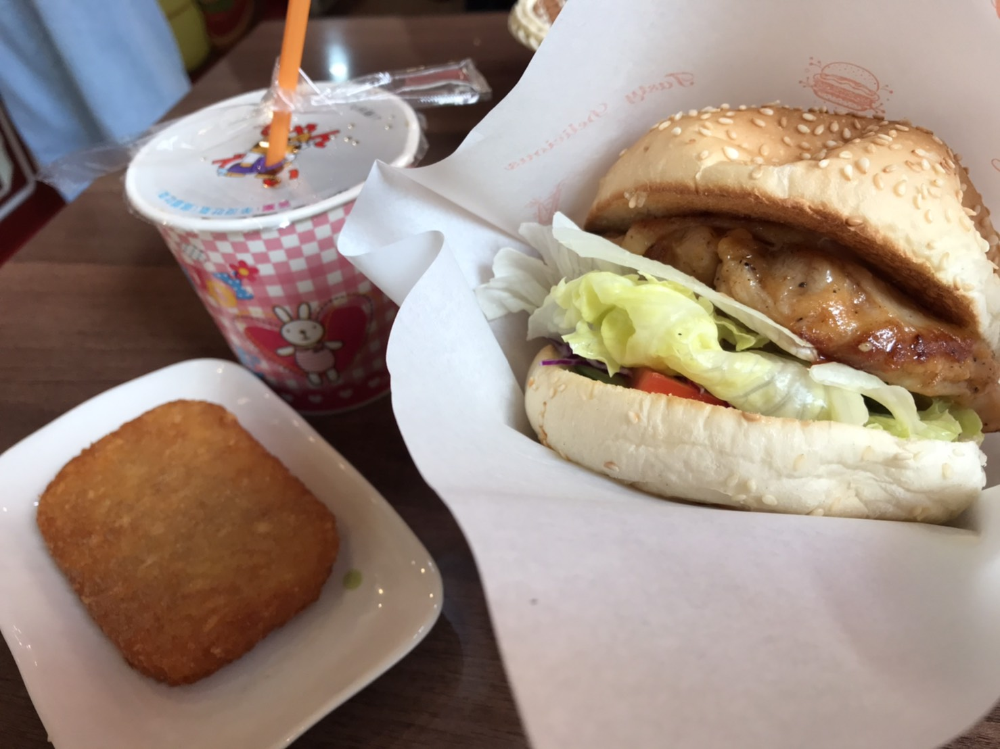
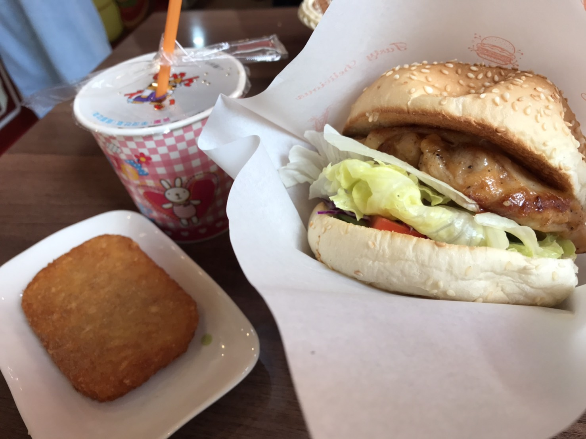
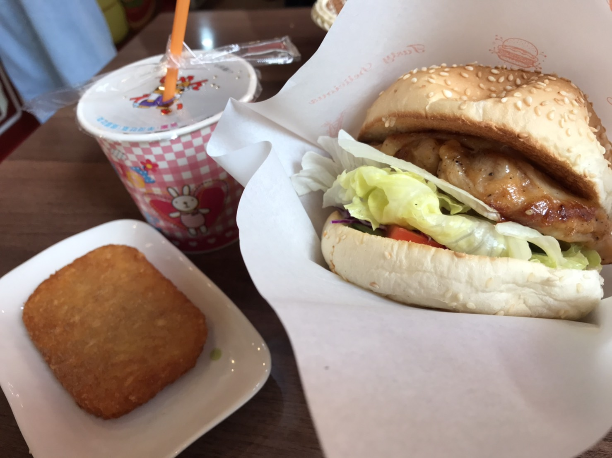

中原的美食太多，每天都好煩惱

漢堡邦 中原大仁店

是一對夫妻開的早午餐店，離教學大樓很近，過個馬路就到了！他的漢堡料足且用料實在，可以吃到完整一片的番茄喔！ 一份套餐，主餐、薯餅再加一杯中杯飲料依據主餐不同，百元有找喔！個人最愛的是他的漢堡，大口咬下、一次滿足！(先壓扁再咬是訣竅) 老闆跟老闆娘都很親切，有時還可以聽到他們在鬥嘴，真的很可愛！ﾟヽ(*´∀`)ﾉﾟ 是近期的愛店 :)
推薦指數：⭐⭐⭐⭐ cp值：⭐⭐⭐⭐⭐ 營業時間：6:00~14:00